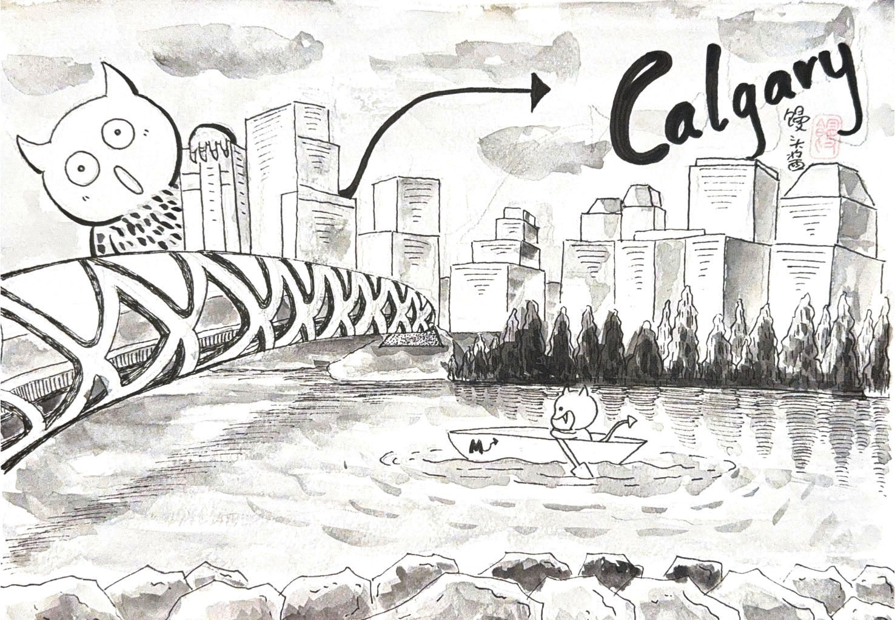
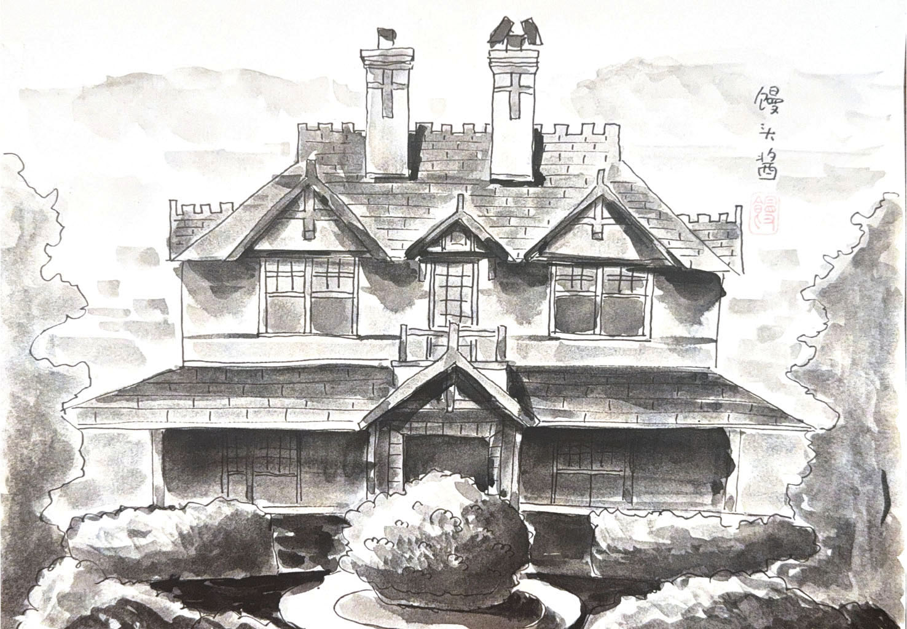
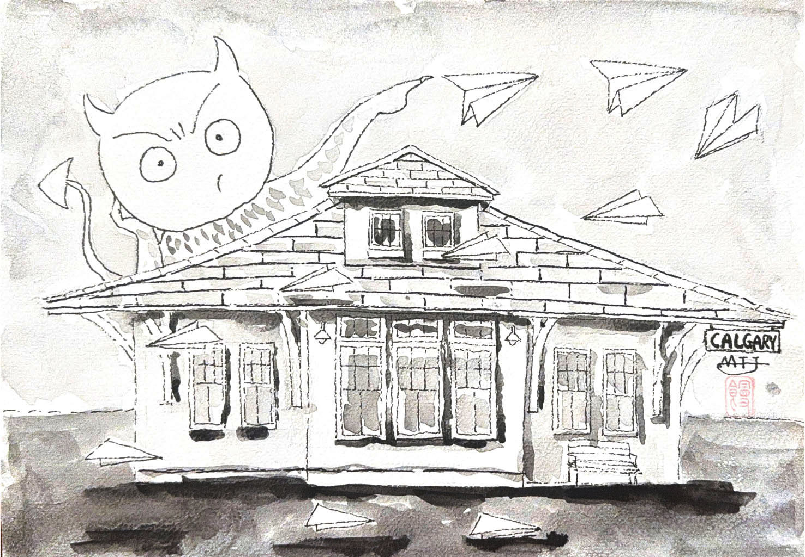
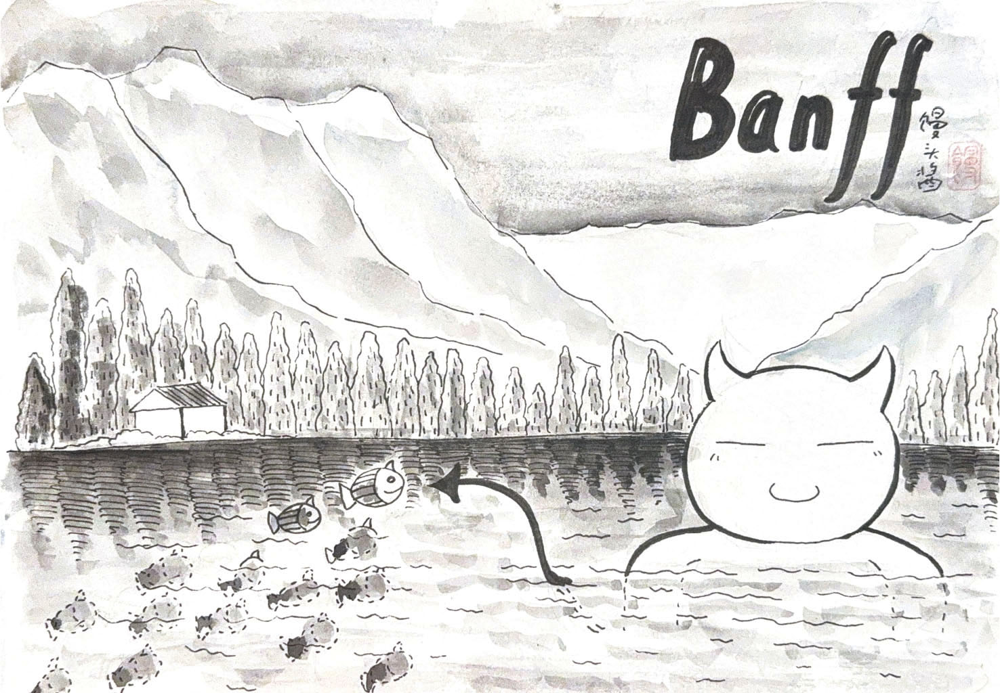
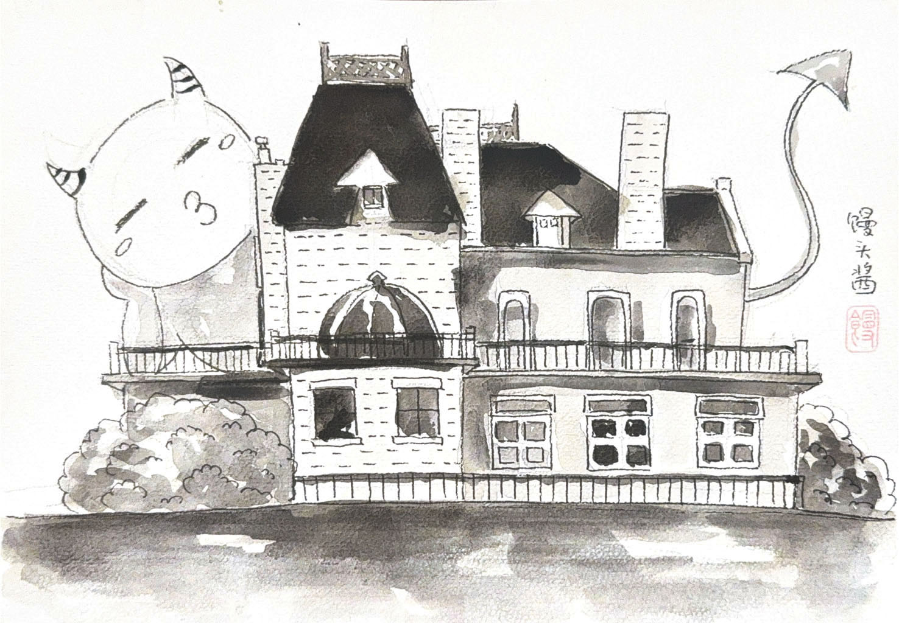
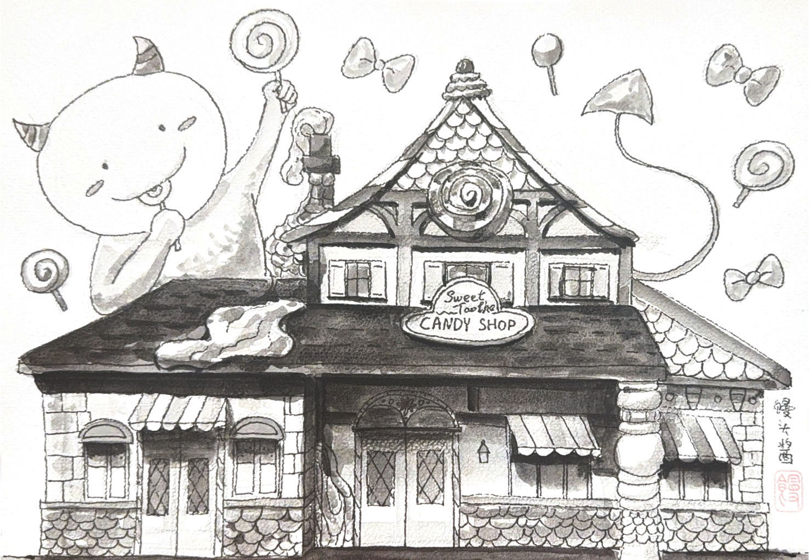
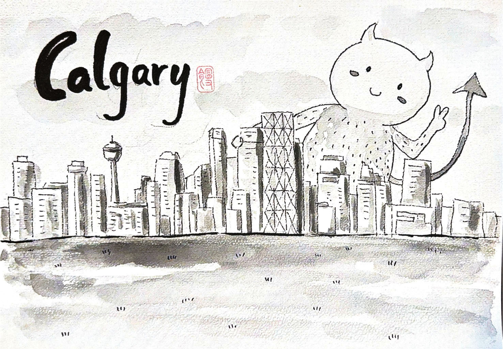
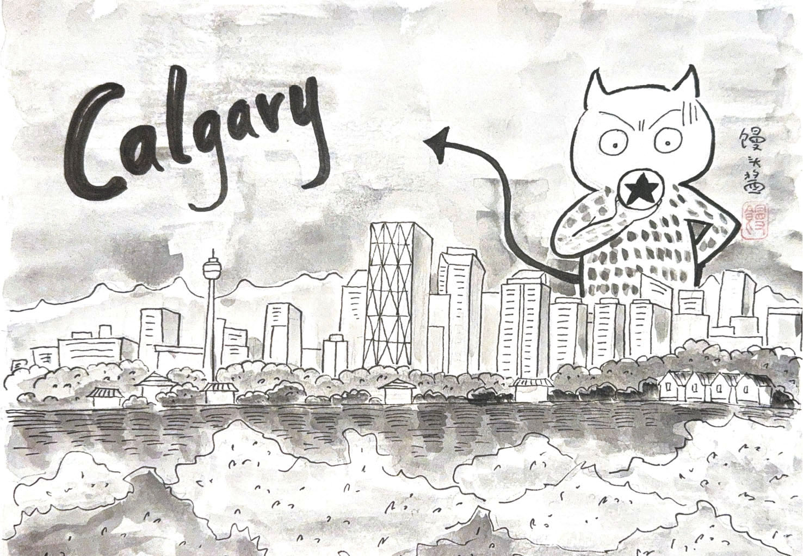
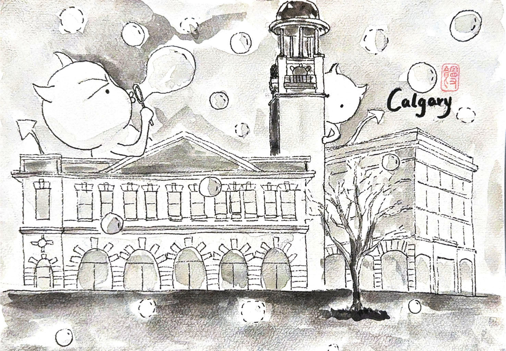
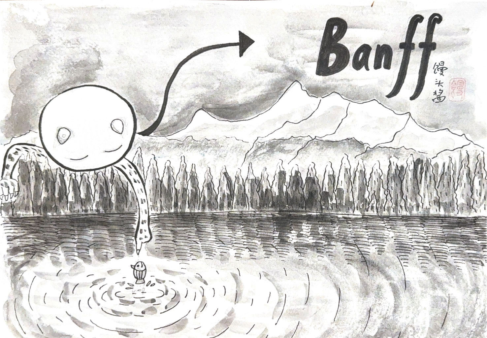

Watercolor / 水彩
Watercolor Works
Black-and-white watercolor drawings from a travel-inspired series, mixing architecture,
city views, landscape memory, and playful characters.

01 · Watercolor
Calgary Bridge

02 · Watercolor
Historic House

03 · Watercolor
Paper Planes

04 · Watercolor
Banff Lake

05 · Watercolor
Sleepy House

06 · Watercolor
Calgary Skyline

07 · Watercolor
Candy Shop

08 · Watercolor
City Signal

09 · Watercolor
Bubbles at the Library

10 · Watercolor
Banff Reflection